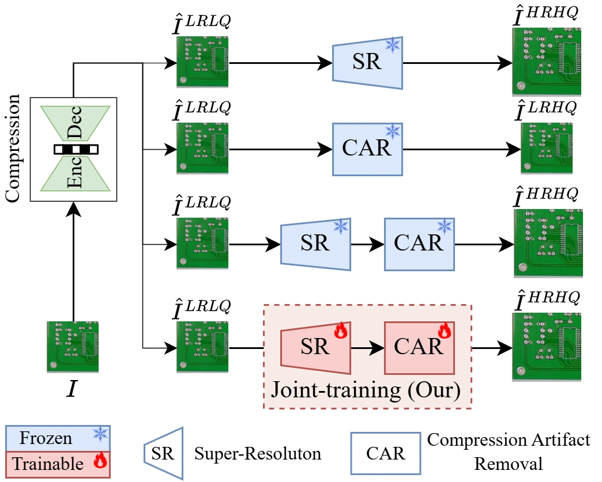
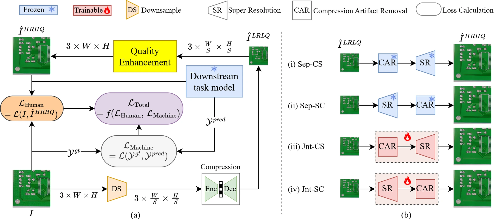
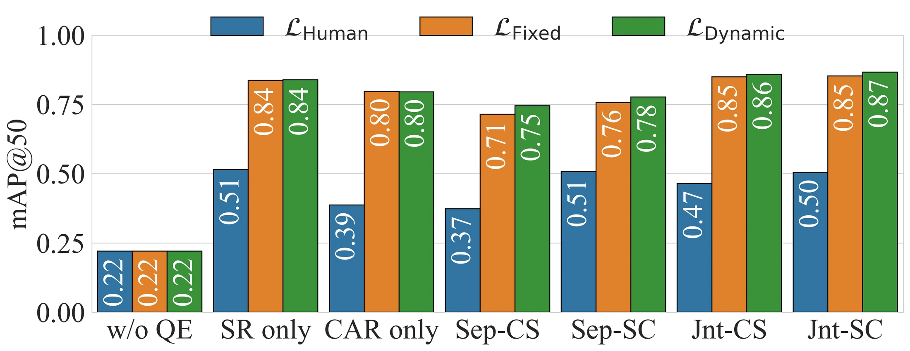
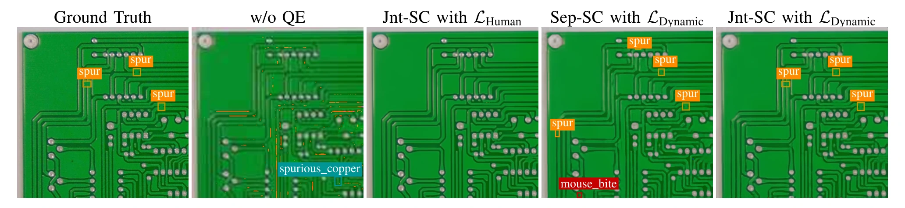

Joint SR and CAR
An end-to-end quality enhancement framework compares both SR-to-CAR and CAR-to-SR processing orders.
End-to-End Joint Training of Super-Resolution and Compression Artifact Removal for Industrial Machine Vision
International Conference on Advanced Technologies for Communications (ATC) · 2026
1 Faculty of Electronics and Telecommunications, VNU University of Engineering and Technology, Hanoi, Vietnam
2 Department of Computer Science, National Yang Ming Chiao Tung University, Taiwan
* Corresponding author: Xiem HoangVan.
Jointly restoring resolution and compression artifacts for industrial machine vision.
Images transmitted by industrial edge devices often suffer from both low resolution and compression artifacts. This work jointly trains super-resolution (SR) and compression artifact removal (CAR) for downstream machine vision. The framework compares alternative processing orders and balances human-perception reconstruction losses with machine-perception objectives using fixed and uncertainty-based dynamic weights. Experiments on PCB Defect, DeepPCB, and NEU-DET examine image quality and defect detection under compression, showing the benefit of end-to-end joint optimization over standalone or separately trained pipelines.
An end-to-end quality enhancement framework compares both SR-to-CAR and CAR-to-SR processing orders.
Reconstruction and downstream-task losses are balanced with fixed or uncertainty-based dynamic weights.
Experiments cover PCB Defect, DeepPCB, and NEU-DET, with comparisons across compression settings.
The quality enhancement network receives a downsampled and compressed image, reconstructs an enhanced image, and passes it to a downstream task model. Joint training combines human-perception and machine-perception losses, allowing both SR and CAR components to adapt to defect detection rather than reconstruction alone.


Under severe JPEG compression, the paper reports an increase from 0.461 to 0.887 mAP@50 on PCB Defect relative to a sequential SR-CAR baseline, with a slight reduction in PSNR. The experiments compare quality enhancement configurations across JPEG quality factors and study the effect of balancing reconstruction and machine-perception objectives.


@inproceedings{2026atcqepcb,
title = {End-to-End Joint Training of Super-Resolution and Compression Artifact Removal for Industrial Machine Vision},
author = {BuiDinh, Dang and NguyenQuang, Sang and NguyenPhuong, Anh and Peng, Wen-Hsiao and HoangVan, Xiem},
booktitle = {International Conference on Advanced Technologies for Communications (ATC)},
year = {2026}
}